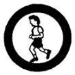
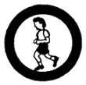

 
Physical Fitness
- Submit evidence of your general medical examination done within the year.
State what has been or will be done to correct conditions needing remedial
measures.
- Do the following:
- Get examined by a dentist. Explain how to care for your teeth.
- Describe your daily health habits and how you take care of your skin, hands, fingernails, eyes, ears, and nose.
- Explain how to ventilate a sleeping room properly. Give the number of hours
of sleep needed by a person of your age. Explain why a person should sleep alone and how far apart beds should be. Demonstrate proper breathing and explain how it affects health.
- Explain the following:
- How disease is spread through drinking water, shared drinking cups, dirty
dishes, dirty dish towels, soiled bath towels, unpasteurized milk, and
personal contact.
- The essential foods for the daily diet of a person of your age and why
it's important to have good eating habits.
- How the use of alcohol, tobacco, and drugs can be harmful to you.
- The value of clean moral habits to general health.
- Do the following:
- Record your best scores in the following tests: push-ups, jump-reach,
run-walks and sit-ups.
- Set goals to reach during the next 30 days
- Do daily exercise and keep a record for 30 days or until your goals
are met.
- With your Outfit Advisor and Counselor, accomplish the following physical
fitness tests. (Earn a minimum of not less than 200 points which must come
from not more than five events):
- PFT #1 - SWIMMING (maximum of 50 pts)
- 15 meters speed swim - 5 points for each second faster than 25 seconds.
- Distance Swim - 50 points for swimming 500 meters, 25 points for
swimming 250 meters.
- PFT #2 - ARM STRENGTH (maximum of 50 pts)
- Pull-Ups - 10 points for each pull-up
- Push-Ups - 2 points for each push-up
- Archery - 5 points for every bullseye
- PFT #3 - ABDOMINAL POWER (maximum of 50 pts)
- Bent-Knee Sit-Ups - 1 point for each sit-up
- PFT #4 - SPEED RUNNING (maximum of 50 pts)
- 50-Yard Dash - 2 points for each 1/10 of a second faster than 11
seconds
- 40-Yard Shuttle Run - 2 points for each 1/10 second faster than
15 seconds
- PFT #5 - ENDURANCE RUNNING OR WALKING (maximum of 50 pts)
- 500 Meters Run-Walk - 1 point for each second faster than 4 minutes
- One-Kilometer Walk - 10 points for each minute faster than 20 minutes
- PFT #6 - JUMPING (maximum of 50 pts)
- Standing Long Jump - 5 points for each inch over 4 feet
- Vertical Jump and Reach - 5 points for each inch over 7 inches
- PFT #7 - Body Coordination (maximum of 50 pts)
- Basketball Throw - 2 points for each foot over 30 feet
- Softball Throw - 1 point for each foot over 70 feet
- Archery - 5 points for every bulls-eye
- Discuss with your Counselor how a Scout can serve others by being physically fit.
|